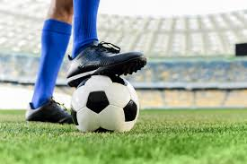
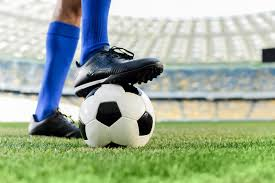

Mes Hobbies et Activités Sportives
Hobbies
Je suis passionné par la lecture d’œuvres scientifiques en français et en anglais, ainsi que de la Bible et des ouvrages chrétiens. J’apprécie également les paysages naturels, en particulier les environnements verts et tranquilles des villages.
Activités Sportives
Je pratique régulièrement la course à pied et le football, deux activités qui me permettent de rester en forme et de me détendre en dehors du travail.
 
